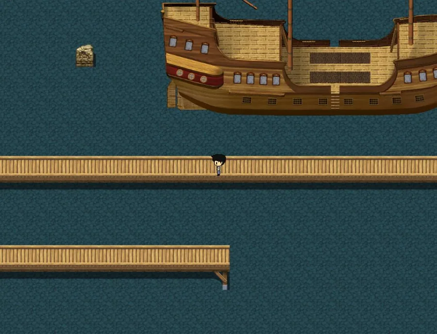
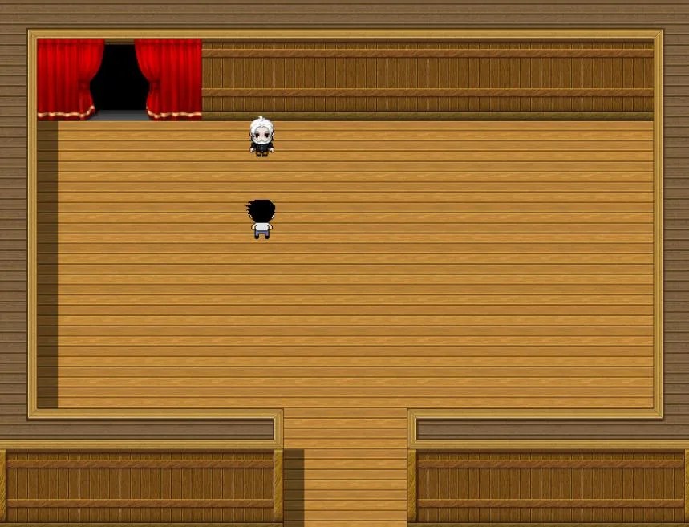
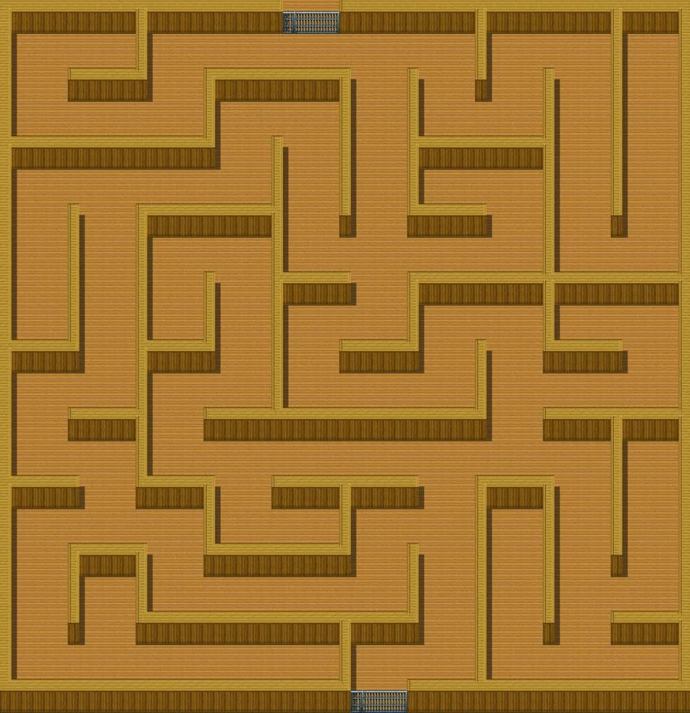
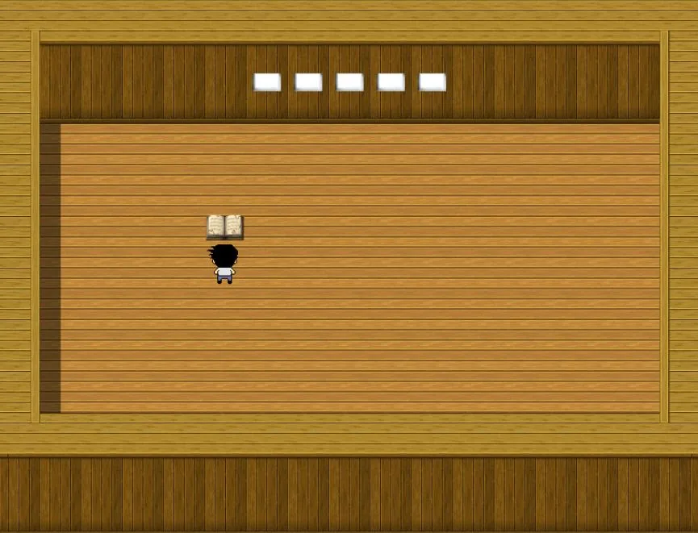

Game design and development · RPG Maker MV · 2024
Mimpi Sang Pemikir
A short puzzle game set inside a dream. A scholar sets three puzzles, each harder than the last, and the only way to wake up is to solve them all. The title means “The Thinker’s Dream”.
- My part
- Design and development, built in RPG Maker MV, and the game design document
- Art
- Tsaqib’s concept art by Arya Athalla Rizqullah and Radiandra Reysha Rahazade; tiles, other sprites and music from RPG Maker MV
- Platform
- Windows, free, under an hour to play
- Language
- Indonesian
Overview
- 3puzzles, each one unlocking the next
- 5rounds of truth and lies; one wrong answer and it starts over
- < 1 hfrom the first room to an ending
Tsaqib is a high-school student who loves puzzles and finds most maths problems easy. He is being treated in hospital for schizophrenia, and even there he never stops thinking. One night he falls asleep and wakes in a world that does not look real.
In a house he wanders into, a scholar lets him attempt three puzzles. Solve them all and he wakes up, though not where he fell asleep; give up and he wakes in his usual room. The story is told through hints, so each player can piece together their own version.
Moves with WASD or the arrow keys, interacts by clicking, and has no way to lose except the second puzzle’s reset.
Puzzles
The maze
Clue sheets are scattered through a maze. Read together, they give the code that opens the way out.
Two guards
Two guards in front of two doors, each saying who of them is honest and which door they would take. Five rounds in a row, and a wrong door sends you back to the first.
Einstein’s riddle
Five friends, five foods, five shirt colours and five home towns: fill in the five boards so that every clue holds.
In the game



